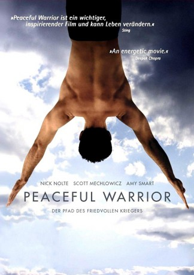
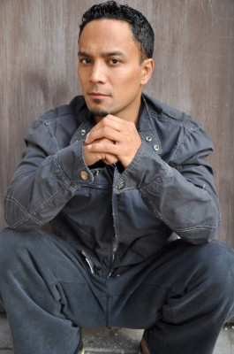

#3599 Peaceful Warrior - Der Pfad des friedvollen Kriegers
 
 IMDB-Wertung: 7.3 / 10
IMDB-Wertung: 7.3 / 10  Metascore: 0
Metascore: 0 
Dan Millman (Scott Mechlowicz) ist ein erfolgreicher Turner und führt ein erfülltes Leben voller Partys, Frauenbekanntschaften und sportlicher Erfolge. Sein großes Ziel ist die olympische Goldmedaille, woraufhin er verbissen trainiert. An einer Tankstelle lernt er den seltsamen, zurückhaltenden Socrates (Nick Nolte) kennen, der trotz seines hohen Alters über erstaunliche körperliche Fertigkeiten verfügt. Doch erst ein folgenschwerer Verkehrsunfall reißt Dan aus der Bahn: Ein Bein wird so zerschmettert, das ihm die Ärzte keine Chance auf eine Rückkehr zum Sport zutrauen. Nur der weise Socrates scheint noch an die Möglichkeit zu glauben und wird zum Mentor für Dan, motiviert ihn mit geistigen wie körperlichen Lektionen und führt ihn auf den geistigen Pfad des „Friedvollen Kriegers“. Langsam aber sicher erwacht der Kampfgeist wieder in dem jungen Mann...
Jahr: 2006
Dauer: 115 Minuten
FSK: 6
Land: Deutschland Studio: DEJ ProductionsTonspuren: DD2.0 - ,
Untertitel:
Auflösung: 720p (1280x704) Größe: 4474 MB
Genre: Drama, Liebe, Sport
Regisseur: Victor Salva
Drehbuch: Peter Berg
Soundtrack:
Darsteller:
 Scott Mechlowicz als Dan Millman
Scott Mechlowicz als Dan Millman Nick Nolte als Socrates
Nick Nolte als Socrates Amy Smart als Joy
Amy Smart als Joy- Tim DeKay als Coach Garrick
 Ashton Holmes als Tommy
Ashton Holmes als Tommy- Paul Wesley als Trevor
- B.J. Britt als Kyle
 Agnes Bruckner als Susie
Agnes Bruckner als Susie- Tom Tarantini als Thug with Gun
 Beatrice Rosen als Dory
Beatrice Rosen als Dory Ray Wise als Doctor Hayden
Ray Wise als Doctor Hayden- Matthew Prater als Thug Two
- Jimmy Bradley als Commentator One
- Steve Talley als Young Garage Man
- Tom Costello als Dan's Neighbor
- Karen Landry als Patricia Millman
 Rob Moran als Dan Millman Sr.
Rob Moran als Dan Millman Sr.- Chad Nadolski als Medic
 Charles Grisham als Bar Patron #1
Charles Grisham als Bar Patron #1- Robin Schorr als Blond Woman in Car , scenes deleted
- Cami Winikoff als Woman in Car , scenes deleted
- Tony Black als Gymnast , uncredited
- Chelsea Crowe als Dorm Student , uncredited
- Vladislav Kozlov als Kissing Guy , uncredited
-  Nito Larioza als Gymnast , uncredited
- Renzo Lewis als Bartender , uncredited
- Marcus Lindsey als Gymnast , uncredited
- Wes McGee als Gymnast , uncredited
- Shea Weaver als Waitress , uncredited
- Scott Caudill als Thug One
- Bart Conner als Himself
- Dan Millman als Man in Car
- Neil Furuno als Gymnast One
- Tyler Vogt als Bar Patron #2
- Tabor Cowden als Gymnast , uncredited
- Samuel Nathan Hoffmire als Gymnast , uncredited
- Beau Ioana als Beau Ioana, Lead Gymnast , uncredited
- Ksenia Jarova als Kissing Girl , uncredited
- Aurelie Kyinn als Dorm Student , uncredited
- Ramone Moore als Gymnast , uncredited
Datei: X:\2006(N-Z)\Peaceful Warrior - Der Pfad des friedvollen Kriegers (2006, FSK6, 1280x704).mkv seit 07.05.2016
Festplatte: HD 2005(G-Z)-2006(A-Z)
 Es gibt insgesamt 62 Filme in der Gruppe '2006(N-Z)'
Es gibt insgesamt 62 Filme in der Gruppe '2006(N-Z)'